STRATA TEST — BROWSER LAB
Fifteen three.js things, eleven design briefs and five pieces of eye candy in plain static files: no build step, no npm, no server. Pinned CDN importmap (three 0.170.0, lil-gui 0.19.2, Rapier 0.14.0), ES modules, one folder per thing. Built by Strata running pi headless, one task per build, each verified in headless Chromium.
FIVE GAMES →
Breakout, runner, marble maze, tower defense, flight — on one shared arcade kit: CRT bezel, procedural textures, particles, bloom, WebAudio, HUD in a pixel face.
/games/ · hub of cabinets · scores, sound, restartFIVE GRAPHICS EXPERIMENTS →
GPU water, voxel demolition, tearing cloth, GPU flocking, volumetric fire — motion and graphics pieces with a control panel, a quality preset and interaction hints on every page.


/experiments/ · measured table in experiments/README.mdDESIGN GALLERY — ELEVEN BRIEFS →
Plain static pages built to written briefs and judged with measurements: a landing page, a depot control tower, a nine-screen offline app, a terminal tool, a design system, an identity, thirty years of estuary data, a six-step grant form, a motion system, a flood portal redesigned against its own numbers, and one page in nine visual styles. Screenshots, a console and contrast audit, a self-critique and scores on every one.
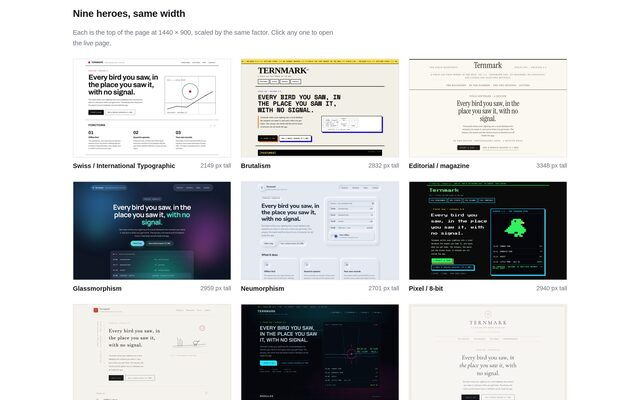
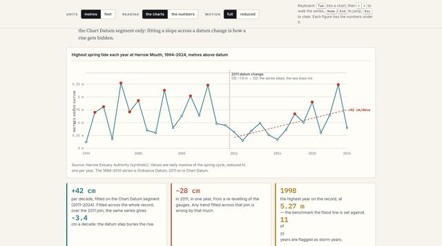
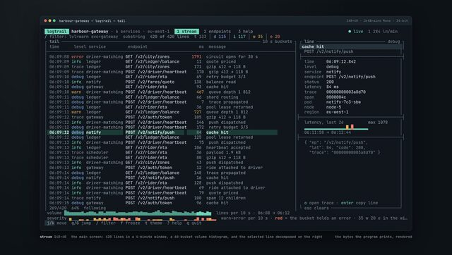
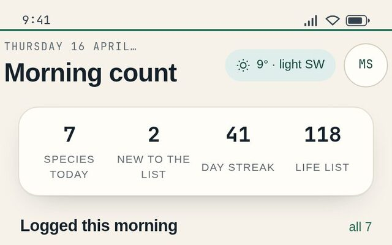
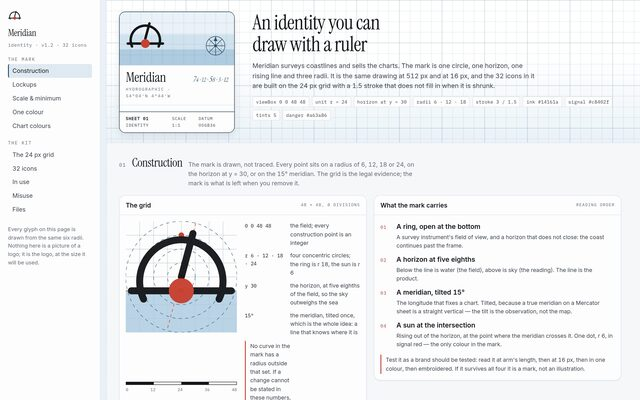
/design/ · scores, verdict and the two audit blind spots in design/README.mdEYE CANDY — FIVE PAGES THAT EXIST TO BE LOOKED AT →
Aurora over a mirrored frozen lake, soap bubbles coloured by thin-film interference, two hundred thousand points of GPU dust, jellyfish lighting themselves up in the deep, and a kaleidoscope fed by its own afterimage. No simulation to solve and nothing to win: a shader, a subject and a grade each, with a control panel, a quality preset and a headless check on every one.


/eyecandy/ · measured table in eyecandy/README.mdTUI — SIX TERMINAL APPS ON ONE CHARACTER GRID →
A system monitor with per-core bars and a killable process table, a three-column mail reader that replies and deletes, a file manager with a git index next to it, a music player whose spectrum reads its own WebAudio graph, a services-and-logs board that is genuinely live, and a modal editor with modes, operators, undo and an ex line. Six jobs, six layouts, six palettes and six box-drawing dialects on one static kit: every key is a key, every key is also a button you can tap, and a headless pass drives the keyboard and reads the state back at desktop and phone widths.
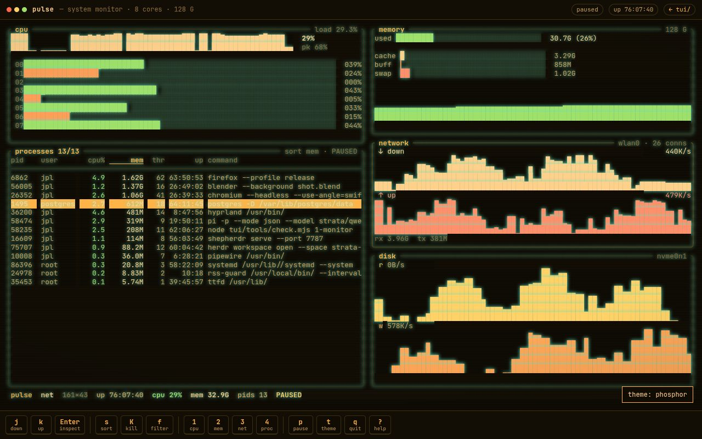
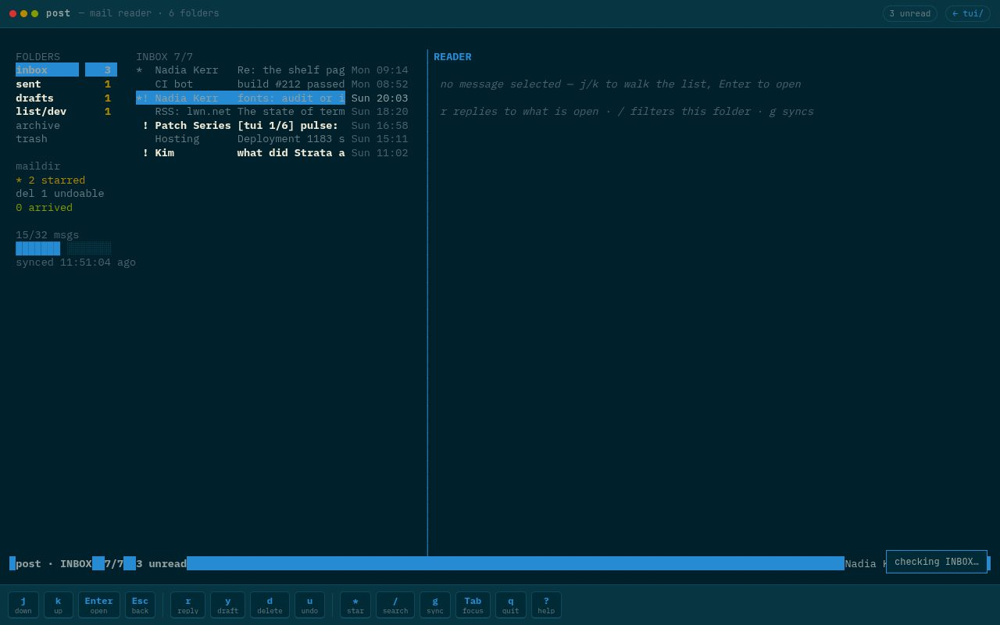
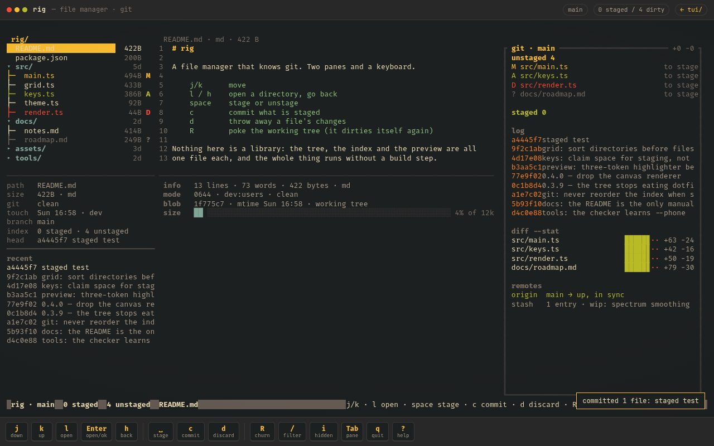
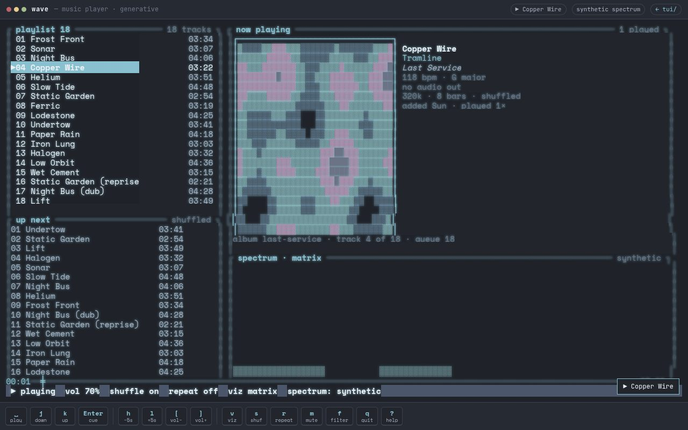
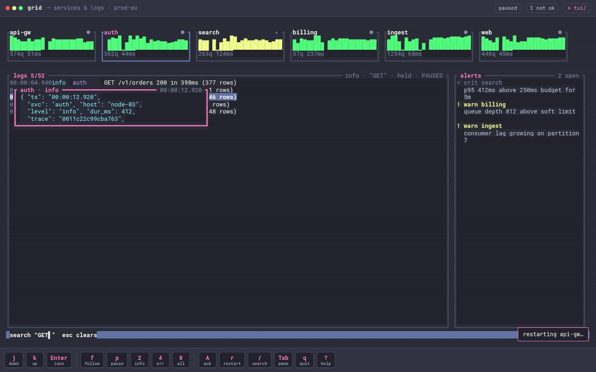
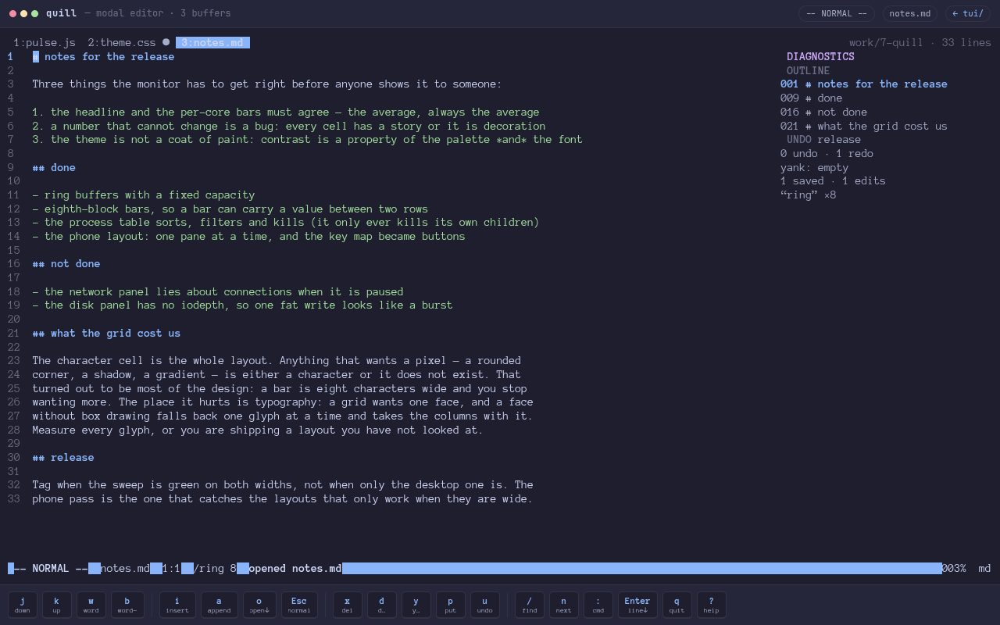
/tui/ · the six designs and what the grid cost in tui/README.md